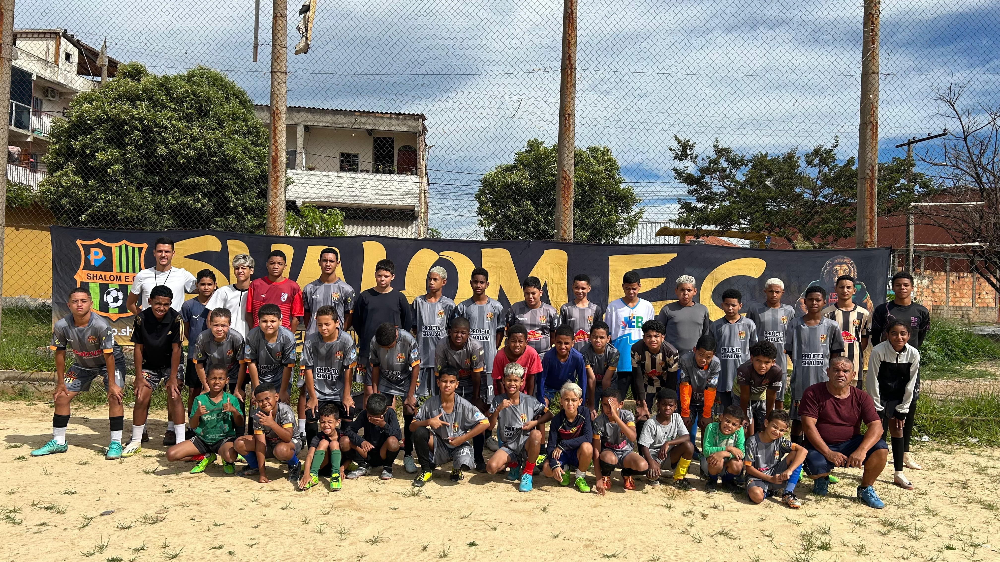
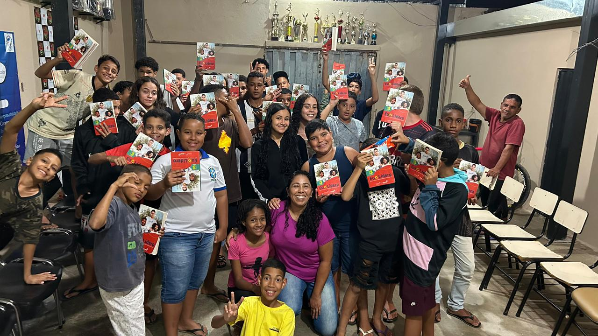
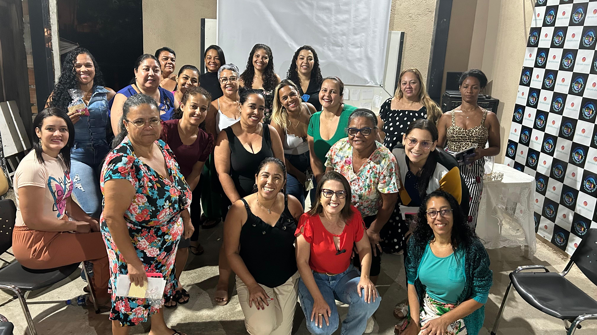
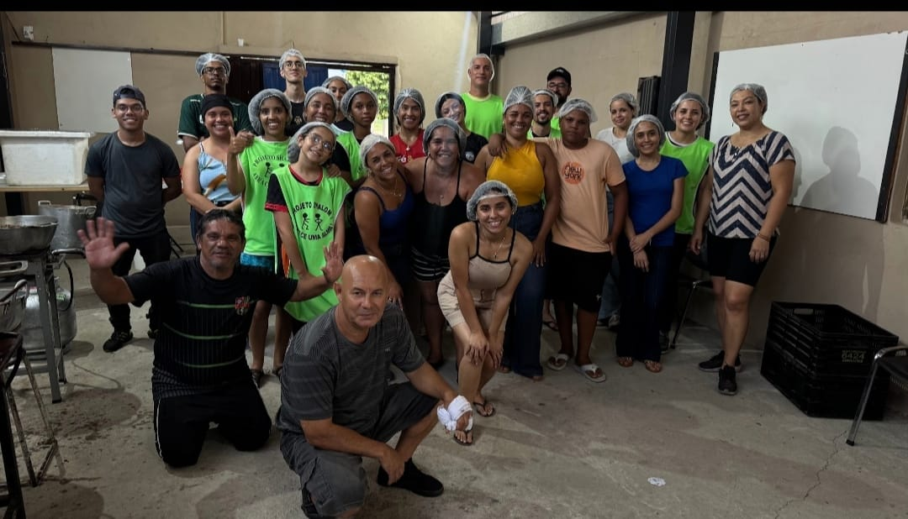
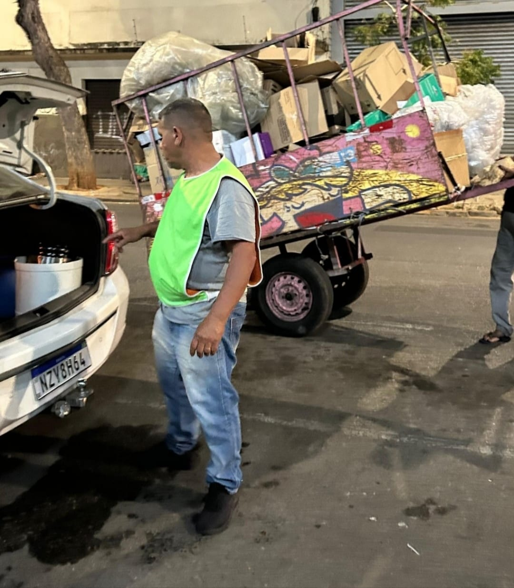
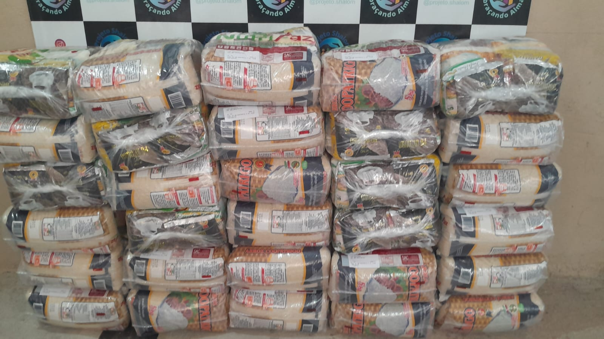

Nossa Missão
Desenvolver atividades que promovam a melhoria da qualidade de vida dos atendidos, incentivando o esporte, a cultura, o lazer e o desenvolvimento social. Atuar na promoção da inclusão e na redução das desigualdades sociais.
O Projeto Shalom surge com uma missão simples, porém poderosa: alcançar crianças, jovens e adultos por meio do esporte e da educação, promovendo transformação social com amor, propósito e cuidado ao próximo.
Fundado em 2010, o Projeto Shalom acredita que toda criança merece uma oportunidade de crescer com dignidade, alegria e pertencimento.
Desenvolver atividades que promovam a melhoria da qualidade de vida dos atendidos, incentivando o esporte, a cultura, o lazer e o desenvolvimento social. Atuar na promoção da inclusão e na redução das desigualdades sociais.
Ser reconhecido nacionalmente como um projeto de referência em transformação social, promovendo o desenvolvimento humano e contribuindo ativamente para a construção de uma sociedade mais justa e inclusiva.
Honestidade, transparência, união, respeito à diversidade social, valorização do ser humano e fortalecimento dos vínculos familiares. Princípios que orientam nossas ações e refletem nosso compromisso com o cuidado ao próximo e a transformação social.
O Projeto Shalom nasce com o objetivo de desenvolver atividades que tirem crianças das ruas da ociosidade, usando o futebol como principal ferramenta de transformação social.
Início do trabalho sistemático com a população em situação de rua: distribuição de alimentos, escuta ativa e encaminhamentos com dignidade.
Realização do maior Jantar de Natal do projeto, atendendo 1.275 pessoas em situação de vulnerabilidade social no dia 25 de dezembro.
Expansão das atividades com inclusão de aulas de reforço escolar e as primeiras rodas de conversa para mulheres e meninas da comunidade.
Lançamento do curso de desenvolvimento socioemocional, formando jovens protagonistas com habilidades de liderança, autoconhecimento e empatia.
Cada número representa uma vida transformada, uma família acolhida, uma criança que encontrou no Shalom muito mais do que um projeto.
Cada iniciativa foi pensada para atender uma necessidade real da comunidade — do campo de futebol à sala de aula, da cesta básica ao abraço de natal.

EsporteTreinos regulares, torneios e a experiência de jogar em equipe como escola de vida. O futebol é nossa principal ferramenta para desenvolver disciplina, respeito e pertencimento.

EducaçãoCurso de desenvolvimento socioemocional que forma jovens protagonistas. Trabalhamos autoconhecimento, liderança, caráter e habilidades relacionais em módulos dinâmicos.

ComunidadeEspaços seguros de acolhimento e diálogo para mulheres, meninas e público aberto. Abordamos saúde mental, autoestima, direitos e bem-estar em encontros regulares.

SolidariedadeTodo dia 25 de dezembro, o Shalom abre seus braços para pessoas em situação de vulnerabilidade. Em 2025, 1.275 pessoas foram acolhidas com um jantar especial e muito amor.

InclusãoAtuação direta com a população em situação de rua: distribuição de alimentos, escuta ativa e encaminhamentos. Porque todo ser humano merece dignidade e cuidado.

FamíliaAcompanhamento de famílias em situação de vulnerabilidade com distribuição de cestas básicas, orientações e rede de apoio comunitário para garantir o básico com dignidade.
Cada registro é um capítulo desta história de transformação e amor.
Não existe contribuição pequena quando o propósito é grande. Escolha como quer fazer parte desta história.
Sua doação financia treinos, materiais esportivos, reforço escolar, cestas básicas, Jantar de Natal, entre outros custos que temos. Qualquer valor faz diferença real na vida de uma criança.
Quero DoarDedique seu tempo e talento. Treinadores, educadores, cozinheiros, fotógrafos, profissionais de saúde — toda habilidade é bem-vinda no Projeto Shalom.
Cadastrar-meEmpresas que apoiam o Projeto Shalom ganham visibilidade, propósito social e a certeza de que seus recursos estão gerando impacto real e mensurável na comunidade.
Falar conoscoO Projeto Shalom é movido pelo amor de pessoas que acreditam que é possível fazer o bem. Se você tem um talento para compartilhar, venha fazer parte desta família.
Ajude a conduzir treinos e atividades esportivas com as crianças e adolescentes.
Apoio no reforço escolar e nos programas de formação socioemocional.
Essenciais nas ações sociais e no Jantar de Natal de 25 de dezembro.
Fotógrafos, designers e criadores de conteúdo para ampliar nossa voz.
Advogados, psicólogos, médicos, contadores — todo talento tem espaço aqui.
Sua generosidade transforma realidades: com sua doação, mantemos nossos treinos de futebol, fornecemos materiais esportivos e garantimos reforço escolar. Além disso, você nos ajuda a levar esperança e dignidade ao nosso Jantar de Natal, alcançando cada vez mais famílias em situação de vulnerabilidade.
O Projeto Shalom é uma organização transparente com CNPJ ativo. Cada recurso é utilizado diretamente nas atividades sociais.